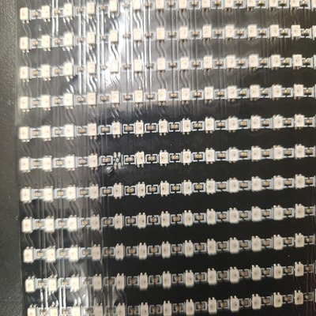
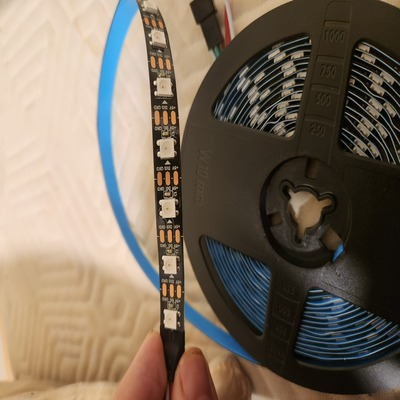
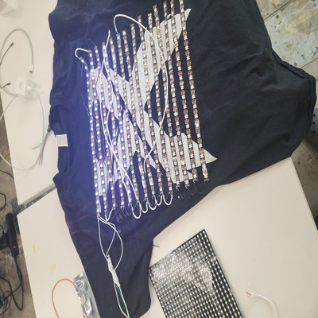
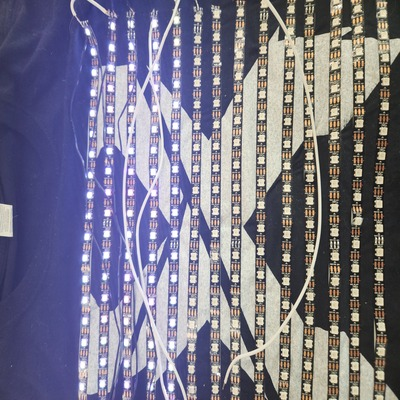

<br>
#### Week 11: Final integration and documentation
<p>
This week I learned about computer programming and I will be documenting the implementation of my final project. For the video of my final project in action and the next steps look at the final project tab.
</p>
<br>
<p><storng>Project integration software</strong></p>
<br>
<p>
While I liked the work I did for my MVP it was not optimized. With permission from Nathan, I decided to replace it with my microcontroller communication script from CS32 (optimized and clean code). I needed to make some changes to the CS32 script to make it viable for my project. The sweatshirt would only deal with small images. Because of this, I didn't need the speed of UDP and I could deal with the slower TCP protocol which guaranteed that the information I sent would get to my microcontroller. I changed it to TCP sockets and tried to get it to work with the ESP-32 the problem is the WIFI Arduino library deals with characters which means it reads from the socket stream one byte at a time. My cs32 library originally sent the information as shorts so two-byte pieces of data. I had two solutions I could try to interface the two I could try to implement a system to understand the two bytes in C++ on the end of the ESP32 or I could change my Python script to work with characters. I chose to do it this way because Python tends to be easier to work with, and it would put the processing work on my computer which is much faster than the ESP32. I changed it to send characters so I converted the color arrays to strings so 132 the integer became “132” the string. I put the letter p in between each pixel color value. p works because it will never show up outside of this context because we are dealing with number values. Furthermore, the separator could have been any non-number character. It's best to keep it as one character to minimize the amount of data sent. I then encoded it into utf-8 bytes and sent it and read it. There was a possible 3rd solution and that was to use Micro-Python. Micro-Python is a programming language based on Python that can control the ESP32. I decided to use C++ and the Arduino WIFI library because FASTLED has native support for C++. Someone has made a port of FASTLED to Micro-Python, however, it is not the original creators of FASTLED so I don't know if it would work, how well it works, and if it's optimized and supports all the same LED chipsets and microcontrollers. To control the LED strands I used the FASTLED library. After this, I made a Python script that has a UI that prompts the user for a file and then resizes that file to the correct size of the LED array so it is able to be sent using the server script I wrote. Note I wrote a lot of code so instead of trying to format it I am going to link the public GIT repo I made the code is under the LED-Sweatshirt branch.
</p>
<a href="https://github.com/davidean1/microcontroller-to-pc-communication/tree/led-sweatshirt">Github REPO </a>
<p><storng>Project Integration Hardware</strong></p>
<p>
Unfourtanetly, the Hardware did not go as smoothly as the software, but it offered a lot of good learning experiences and ideas for the future. I was originally going to crochet the LED strips onto a sweatshirt and use conductive thread to connect each strip. There were three main problems with this design, however, One it takes a while to make so it is not mass-producible, two it is not washable, and three conductive thread is terrible to work with. I did some research and found a solution. BTF-lighting (the company that makes the LED strips) makes a flexible LED panel. They have various sizes from 16 by 16 to 22 by 22 to 8 by 8. I liked this because they would be easy to put on the sweatshirt and I could get a bunch of them. My plan was to crochet a velcro strap onto the sweatshirt and then hot glue the other half on the panels so they could easily be removed and the sweatshirt washed. This would solve all three of the problems above. Unfortunately, they have a long delivery time and the only one that would get here on time was the 22 by 22 which was 60 dollars for 40 dollars I could have gotten 2 16 by 16 which have more total LEDs but they wouldn't arrive on time. Based on the size of the panel (pictured below) I could have fit about 8 of them on a sweatshirt which is about 2048 LEDs which is way more than could ever fit with the LED strips. This is a better resolution, however, it is much more expensive. To combat this cost I plan on learning PCB design with the hope of designing and producing my own flexible PCBs with these LEDS to cut down on the costs significantly. For this assignment, however, I wanted to prototype so I got one panel I funded this with my own money and I could only get one panel at the time. I went to fire it up and an LED fell off of the middle and since they require data to be passed from one LED to the next the stream stopped in the middle. This happened on Sunday night and I tried to fix it (by taking one from the end and putting it in the middle) but I did not have the soldering skills to work with such small components. I was panicking as the assignment was due in a few days and I was moving out of my dorm the next day (off campus where I would be staying for the summer to do physics research). I was able to get some LED strips from the lab and I used adhesive to put them onto an old shirt. I had to solder and I was not on campus so I went to the hardware store and bought a cheap soldering iron, wire, and solder. I was outside (with better ventilation) with a camping lantern and I soldered each strip together (pictured below). Throughout the middle of the process, the LEDs stopped working so I re-soldered the beginning connection with a different piece of solder. That didn't work so when I arrived at the lab in the morning I replaced my ESP-32 and it worked I ran my code and that worked and overall the sweatshirt worked as intended. I didn't have a USB power bank so the ESP-32 could only power five rows of 20 LEDs. This caused bad resolution and resizing the images to 100 pixels got rid of a lot of the detail but the concept worked which was nice to see. For the future, I will power it with a USB power bank so it is portable and all LED strips light up I just didn't have one available to me at the time more LEDs means better resolution and less noise from resizing the image.
</p>
<p>Below is pictures of the LED pannel Led strips the sweatshirt and video of the sweatshirt working as well as showing the software and how it works</p>




<P>In the future I am going to learn PCB design using ALtium and try to make my own panels. I want to try with the panels so it can be washable and I want to upgrade the UI to start the server so the user doesnt need to use the command line. Furthermore in its current state the restart button needs to be pressed on the ESP32 to refresh the image I want to make it so the user doesnt have to do this. I enjoyed this project because I got to practice my soldering skills and programming skills and I got to learn a lot about image formats and networking specfically sockets and threading.</P>
<p><storng>Below is a video (no sound) demo of my software and hardware in action including the UI and how to reset the ESP32 in order to fully update</strong></p>
<video width="500" height="500" autoplay muted>
<source src="sweatshirt.mp4" type="video/mp4">
Your browser does not support the video tag.
</video>